요청 처리와 정기 갱신을 분리
앱의 아이·도감 요청은 서비스 계층으로, 시간에 따라 변하는 식사 상태·알림은 SchedulerService로 분리했습니다. 두 경로는 같은 JPA 저장소를 사용합니다.
고려할 점 시간 규칙을 한곳에서 읽기 쉬운 대신, 다중 인스턴스에서 작업 중복 실행을 막는 별도 조정은 공개 코드에서 확인되지 않습니다.
Service / Applied AI
식사·양치 활동에 게임과 동작 인식을 결합한 아동 생활습관 개선 서비스입니다. 팀장으로 기획·발표와 백엔드·AI를 담당했습니다.
Architecture / Flow


아이의 식사와 양치를 일상에서 반복할 수 있는 활동으로 만들고자 했습니다. 팀은 게임과 동작 인식을 연결해 아이가 직접 참여하는 모바일 서비스를 기획했습니다.
팀장으로 기획과 발표를 맡고, 백엔드와 AI 적용에 참여했습니다. 전문가 자문과 사용자 관점을 서비스 기획에 연결하고, 구현한 기능과 팀의 결과를 발표했습니다.
MediaPipe를 Unity에 적용해 기기에서 동작을 인식하도록 구성했습니다. 손동작 인식 보완에는 Convex Hull 알고리즘을 적용하며 인식 결과를 앱의 동작과 연결했습니다.
아이·캐릭터·수집 데이터를 JPA로 관리하고, 식사 상태와 경험치를 예약 작업으로 갱신했습니다. SchedulerService에서 batch_size 단위의 flush를 사용하고, 알림 설정 조회와 FCM 발송 흐름을 연결했습니다.
Follow the data
ChildController가 요청을 받아 ChildService로 전달하고, 상태와 기본 수집 항목을 저장한 뒤 응답 DTO를 반환합니다.
아이 수정 요청에 경험치 값이 있으면 경험치를 합산하고 isMeal을 true로 바꾼 뒤 저장합니다.
예약 작업이 미식사 아이의 경험치를 줄이고 별도 시각에 식사 여부를 초기화합니다. 변경은 JPA EntityManager로 flush합니다.
매분 알림 대상 조회 → 아이 토큰을 포함한 PushRequest 생성 → FCM HTTP POST 순서로 실행됩니다.
Engineering decisions
앱의 아이·도감 요청은 서비스 계층으로, 시간에 따라 변하는 식사 상태·알림은 SchedulerService로 분리했습니다. 두 경로는 같은 JPA 저장소를 사용합니다.
고려할 점 시간 규칙을 한곳에서 읽기 쉬운 대신, 다중 인스턴스에서 작업 중복 실행을 막는 별도 조정은 공개 코드에서 확인되지 않습니다.
아이 생성 시 상태·초기 캐릭터·모자 수집 항목을 함께 만들고, 정기 갱신은 설정한 batch_size마다 flush한 뒤 마지막에 clear합니다.
고려할 점 묶음 갱신의 의도는 코드에서 확인되지만 대상 전체를 List로 읽습니다. 청크 조회나 처리량 개선 수치는 검증하지 않았습니다.
아이와 Notification을 ChildNoti로 연결하고, 분 단위 조회에서 선택한 대상의 토큰으로 FCM 메시지를 보냅니다.
고려할 점 설정 조회와 발송을 설명하기 쉽지만, 현재 발송 코드는 동기 HTTP 호출입니다. 실패 재시도·중복 방지·현재 FCM API 호환성은 별도 확인이 필요합니다.
코드 기준 1d89d70 · 구조와 주요 실행 경로를 정적으로 검토했습니다.